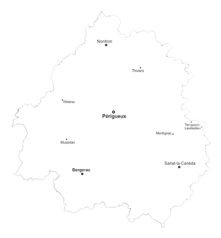
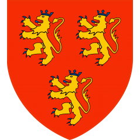
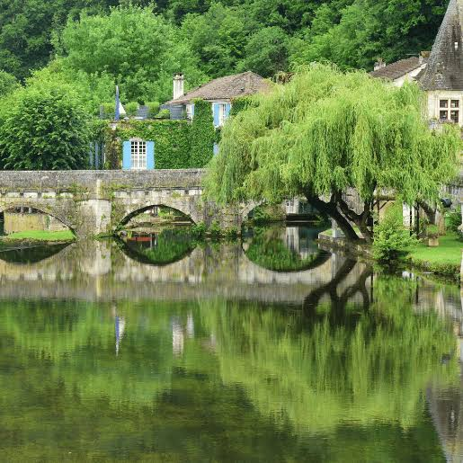

Le Périgord vert désigne la partie nord et nord-ouest du département de la Dordogne, aux confins du Limousin. Son nom, comme ceux du Périgord noir, blanc ou pourpre, renvoie à la couleur dominante de ses paysages : ici, la luxuriance de la végétation et l'abondance de l'eau.

Historiquement limité au nord du département, le territoire s'est progressivement étendu vers l'ouest jusqu'à englober la région de Ribérac. Il correspond aujourd'hui, pour une large part, au Parc naturel régional Périgord-Limousin, fondé autour de villes comme Nontron, Thiviers, Brantôme et Jumilhac-le-Grand.
Terre de moines bâtisseurs à Brantôme, de seigneurs à Jumilhac et de forgerons à Nontron, le Périgord vert a longtemps vécu au rythme de ses rivières et de son artisanat rural, loin des grands flux touristiques du Périgord noir voisin.
Aujourd'hui encore, plus de 2 000 kilomètres de chemins balisés traversent ses forêts, ses prairies bocagères et ses vallées, offrant l'un des visages les plus préservés du Périgord.
Brantôme : abbaye, clocher roman et pont coudé sur la Dronne.
Nontron : capitale de la coutellerie, Pôle Métiers d'Art.
Saint-Jean-de-Côle et Jumilhac-le-Grand : villages de caractère et château seigneurial.
Le territoire se découvre à pied, en canoë sur la Dronne, ou au fil des marchés de village.
Marchés à Brantôme, Thiviers et Nontron, où les producteurs locaux présentent cèpes, châtaignes, noix et fromages fermiers.
Randonnée toute l'année, avec un réseau dense de sentiers balisés au départ des principaux villages.